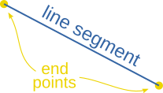
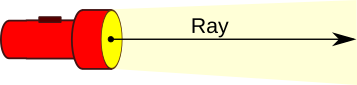

Line
In geometry a line:
- is straight (no bends),
- has no thickness, and
- extends in both directions without end (infinitely)
A line has no ends !
Play With It
Change the position of points A and B. Note that the line AB extends forever in both directions:
images/geom-line.js?mode=line
Line Segment

When it does have ends it is called a "Line Segment".
Ray

When it has just one end it is called a "Ray"
This is Cool
Now play with this one ... point "C" is made to always be an equal distance from point "A" and "B". The result is a line (all the possible position of point "C" make a line):
images/geom-line.js?mode=equi
Point, Line, Plane and Solid

A Point has no dimensions, only position
A Line is one-dimensional
A Plane is two dimensional (2D)
A Solid is three-dimensional (3D)